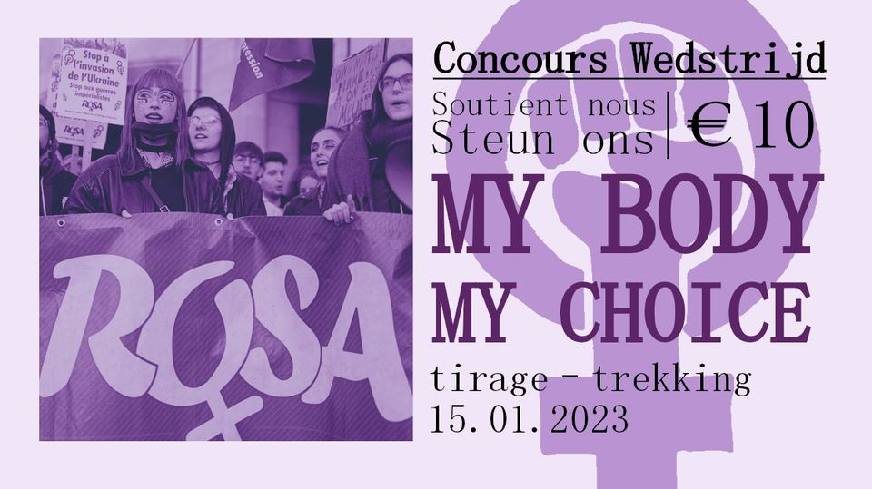
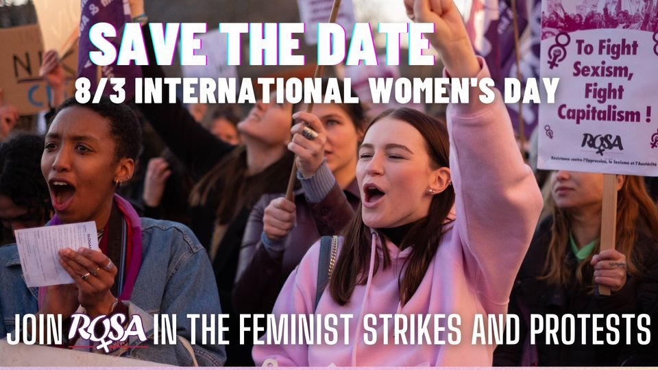

Concours ROSA Wedstrijd
17:00 - Sunday 15 Jan 2023
@ Public
· Anyone on or off Facebook
Organised by Campagne ROSA - NL
View on Facebook
{
"name": "Concours ROSA Wedstrijd",
"startDate": "2023-01-15",
"startTime": "17:00",
"endTime": "19:00",
"location": "Public
· Anyone on or off Facebook",
"description": "Organized by Campagne ROSA - NL. See https://www.facebook.com/events/478306544283203/ for more info",
"timeZone": "Europe/Brussels",
"uid": "https-www-facebook-com-events-4783065442832032023-01-15t17-00-00-01-00",
"label": "Add Concours... to your Calendar",
"iCalFileName": "https-www-facebook-com-events-4783065442832032023-01-15t17-00-00-01-00",
"options": ["Apple", "Google|Google Calendar", "Microsoft365", "Outlook.com", "Yahoo", "iCal|iCal (.ics file)"],
"trigger": "click",
"listStyle": "overlay",
"lightMode": "system"
}

Save the date: Join ROSA on 8/3 International Women's Day
08:00 - Wednesday 08 Mar 2023
@ Public
· Anyone on or off Facebook
Organised by Campagne ROSA - NL
View on Facebook
{
"name": "Save the date: Join ROSA on 8/3 International Women's Day",
"startDate": "2023-03-08",
"startTime": "08:00",
"endTime": "10:00",
"location": "Public
· Anyone on or off Facebook",
"description": "Organized by Campagne ROSA - NL. See https://www.facebook.com/events/6069636209748172/ for more info",
"timeZone": "Europe/Brussels",
"uid": "https-www-facebook-com-events-60696362097481722023-03-08t08-00-00-01-00",
"label": "Add Save the... to your Calendar",
"iCalFileName": "https-www-facebook-com-events-60696362097481722023-03-08t08-00-00-01-00",
"options": ["Apple", "Google|Google Calendar", "Microsoft365", "Outlook.com", "Yahoo", "iCal|iCal (.ics file)"],
"trigger": "click",
"listStyle": "overlay",
"lightMode": "system"
}